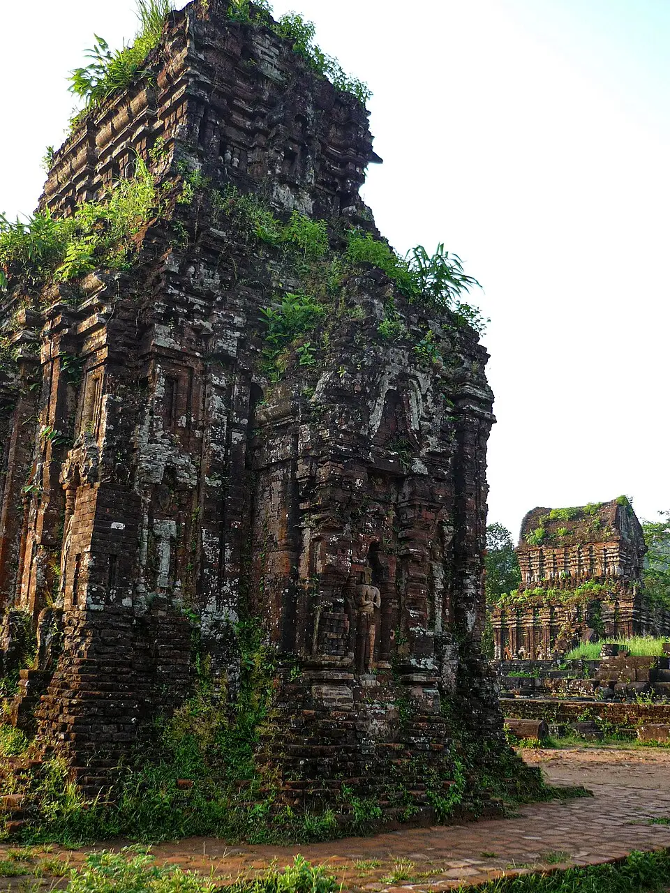
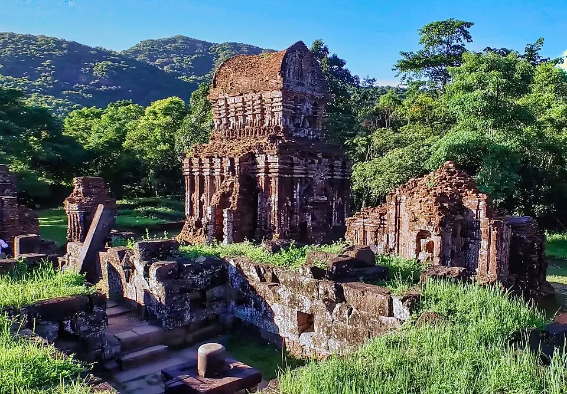
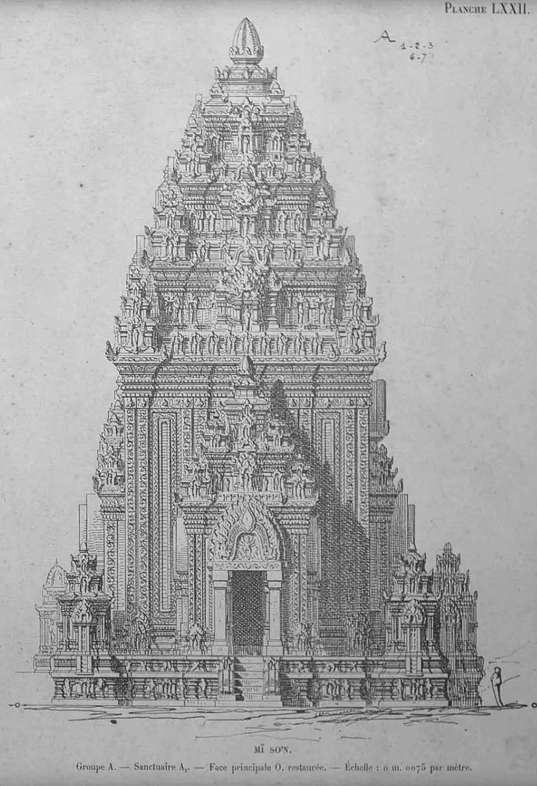
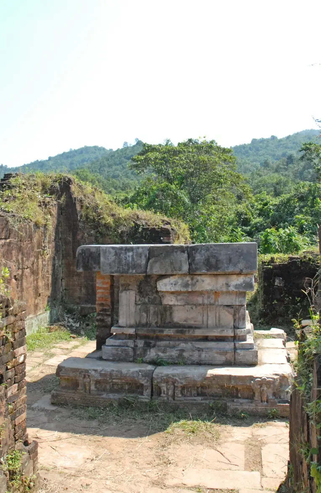

Mỹ Sơn: một nghìn năm gạch đỏ và một tuần bom
Người Chăm xây đền ở thung lũng Mỹ Sơn suốt gần mười thế kỷ, bằng gạch nung mà đến nay chưa ai biết chắc họ gắn lại bằng gì. Tháng 8 năm 1969, phần lớn quần thể bị phá hủy trong các đợt ném bom của không quân Mỹ, kể cả ngôi đền A1.

Tháng 8 năm 1969, máy bay Mỹ ném bom một thung lũng nhỏ cách Đà Nẵng ngày nay khoảng 68 km. Thung lũng khi đó nằm trong vùng căn cứ của Quân đội Nhân dân Việt Nam và Mặt trận Giải phóng. Giữa rừng là ngôi đền A1, cao khoảng 24 mét, được giới nghiên cứu Pháp coi là kiệt tác của kiến trúc Chăm. Sau trận bom, A1 chỉ còn là một đống gạch không ra hình dạng. Muốn hiểu thứ đã mất, phải quay lại hơn một nghìn năm trước.
Theo bản dịch tiếng Anh của bia, cuối văn bản là lời xin các vua đời sau: "vì thương ta, đừng phá những gì ta đã dâng".
Thung lũng của thần Bhadreshvara
Câu chuyện bắt đầu với vua Bhadravarman I, trị vì từ năm 380 đến 413. Ông dựng ở Mỹ Sơn một ngôi đền gỗ thờ linga của thần Shiva dưới tên Bhadreshvara, ghép từ tên vua và chữ isvara (chúa tể). Tấm bia của ông dâng cả thung lũng cho thần. Theo bản dịch tiếng Anh của bia, cuối văn bản là lời xin các vua đời sau: "vì thương ta, đừng phá những gì ta đã dâng".
Ngôi đền gỗ cháy vào thế kỷ 6. Vua Sambhuvarman, trị vì từ năm 572 đến 629, dựng lại và thờ thần dưới tên Sambhu Bhadreshvara. Các đời vua sau tiếp tục tu bổ và xây thêm. Thung lũng rộng khoảng 2 km dần có hơn 70 đền tháp và nhiều bia khắc chữ Phạn và chữ Chăm. Đây vừa là thánh địa, vừa là nơi chôn cất vua chúa Chăm Pa. Ghi chép đáng kể cuối cùng là một trụ đá khắc chữ của vua Jaya Indravarman V, năm 1243. Đến đầu thế kỷ 15, vùng đất này đã thuộc về Đại Việt, và thung lũng dần bị bỏ quên. Thứ còn lại sau những thế kỷ bị quên là gạch, và gạch ở đây có những câu hỏi riêng.
Gạch dính bằng gì?


Gần như mọi đền ở Mỹ Sơn đều xây bằng gạch đỏ. Chỉ một đền, ký hiệu B1, xây bằng đá. Hoa văn cũng được chạm thẳng vào gạch, chứ không gắn những tấm đá chạm sẵn vào tường như ở nhiều đền Khmer.
Đến nay, người ta vẫn chưa hiểu hết kỹ thuật ấy. Câu hỏi thứ nhất: gạch được nung trước rồi mới xây, hay xây bằng gạch nung dở rồi đốt cả công trình? Vữa giữa các viên gạch có dấu vết từng chịu nhiệt cao, nhưng tường tháp lại không có vết cháy lớn. Câu hỏi thứ hai: gạch được gắn bằng gì? Một giả thuyết cho rằng thợ Chăm dùng nhựa cây bản địa. Giả thuyết khác cho rằng họ dùng chính loại đất sét làm gạch. Các phân tích hóa học không tìm thấy chất hữu cơ giữa các viên gạch, mà chỉ thấy khoáng chất giống lõi gạch.
Câu hỏi thứ ba có lời đáp rõ hơn. Các đường chạm không bị đứt quãng ở mạch gạch, nên giới nghiên cứu cho rằng thợ chạm khắc trực tiếp lên bức tường đã xây xong. Ngày nay lớp kết dính cũ đã mục nhiều, và gió mạnh cũng có thể làm rơi gạch. Thung lũng bị quên ấy được người châu Âu tìm lại vào cuối thế kỷ 19.
Người Pháp tìm lại


Ai là người châu Âu đầu tiên thấy Mỹ Sơn? Wikipedia tiếng Anh ghi năm 1898, người phát hiện là Camille Paris. Wikipedia tiếng Pháp cũng nêu tên ông nhưng ghi năm 1889, còn Wikipedia tiếng Việt ghi năm 1885. Camille Paris (1856 đến 1908) từng làm đường dây điện tín ở Trung Kỳ và mê vẽ bản đồ.
Từ năm 1899, các học giả của Viễn Đông Bác cổ (EFEO) đến nghiên cứu. Kiến trúc sư Henri Parmentier đếm được dấu tích của 71 đền tháp. Ông chia chúng thành các nhóm A, A', B, C, D, E, F, G, H, K, rồi đánh số từng công trình. Cách gọi "Mỹ Sơn A1" hay "Mỹ Sơn E1" mà khách tham quan đọc trên biển chỉ dẫn hôm nay là của ông. Năm 1904, tập san của EFEO in bản mô tả di tích của Parmentier và phần văn bia do Louis Finot công bố. Năm 1937 và 1938, người Pháp trùng tu A1 cùng các đền nhỏ quanh nó. Đợt trùng tu ấy chỉ giữ được A1 thêm ba mươi năm.
Một tuần tháng 8 năm 1969


Ba mươi năm sau đợt trùng tu, chiến tranh đến. Theo Wikipedia tiếng Anh, phần lớn kiến trúc Mỹ Sơn bị phá hủy chỉ trong một tuần ném bom. Ở A1 nay chỉ còn bệ thờ linga bằng sa thạch và một đoạn tường bao. Giữa các nhóm tháp B, C và D vẫn còn hố bom. Quanh khu di tích, mìn chưa nổ vẫn là mối nguy.
Việc cứu những gì còn lại kéo dài nhiều thập kỷ. Năm 1981, một nhóm chuyên gia Ba Lan do Kazimierz Kwiatkowski dẫn đầu bắt tay vào trùng tu. Ngày 4 tháng 12 năm 1999, UNESCO đưa Mỹ Sơn vào danh sách Di sản Thế giới. Từ năm 2017 đến 2022, Cục Khảo cổ Ấn Độ trùng tu các nhóm A, H và K, với kinh phí 2,25 triệu USD.
Câu hỏi về lớp vữa vẫn chưa có lời đáp cuối cùng. Những viên gạch tháp A1 nay vẫn nằm ở Mỹ Sơn, nhưng thành một đống đổ nát.